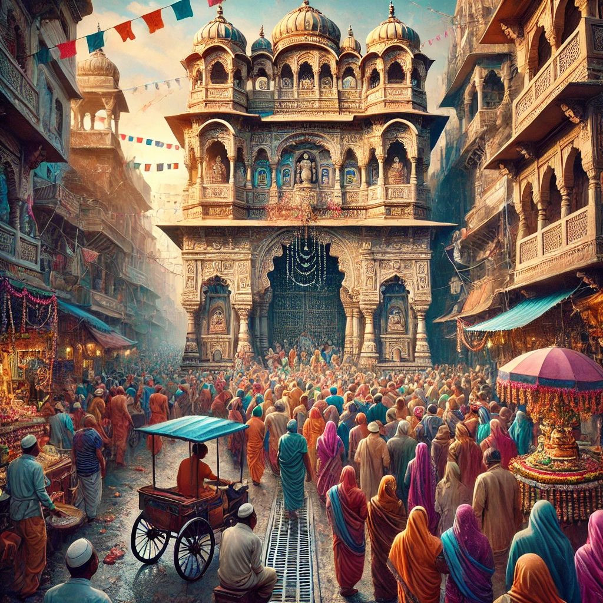
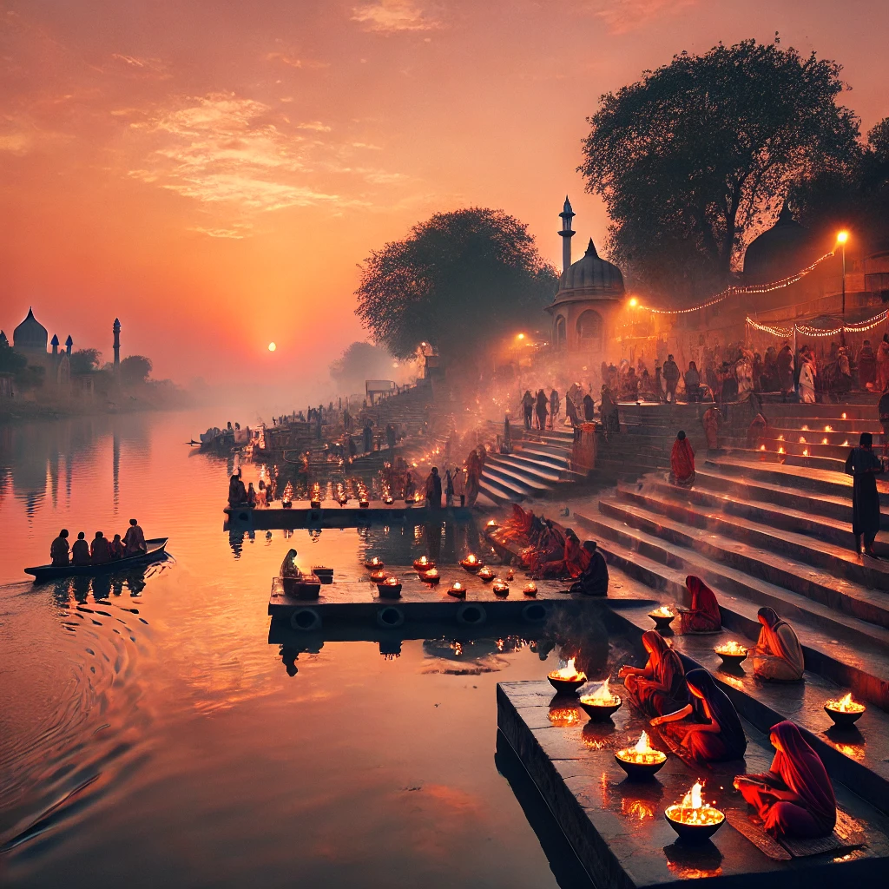

City Overview

History of Vrindavan
Vrindavan, located near the Yamuna River in Uttar Pradesh, India, is believed to be the sacred land where Lord Krishna spent his childhood. It is one of the oldest cities in India, with references to it in ancient scriptures like the Mahabharata. The city’s history is deeply intertwined with the mythological tales of Krishna, including his playful interactions with the gopis, and his miraculous deeds. The city has been a center for spiritual learning and pilgrimage for centuries, attracting saints, poets, and devotees who have added to its religious and cultural heritage.
Significance of Vrindavan
Vrindavan is considered one of the holiest places in Hinduism. For devotees of Lord Krishna, it represents a divine realm of love and devotion. The city is home to over 5,000 temples, including some of the most iconic ones like the Banke Bihari Temple and the Radha Raman Temple. Each year, millions of pilgrims visit Vrindavan to participate in its festivals, such as Holi and Janmashtami, which celebrate the life and teachings of Krishna. The city’s sacredness is not only tied to religion but also to its role in promoting the Bhakti movement, a devotional path to God.


Reputation of Vrindavan
Vrindavan has earned its reputation as the "City of Eternal Devotion" and a center of the Bhakti movement. The city has inspired numerous poets, saints, and philosophers throughout history, including the 16th-century saint Chaitanya Mahaprabhu, who helped revive its spiritual significance. Today, Vrindavan is not only a religious hub but also a destination for tourists who seek peace and cultural enrichment. Its serene ghats, ancient temples, and vibrant spiritual life continue to attract people from all over the world.